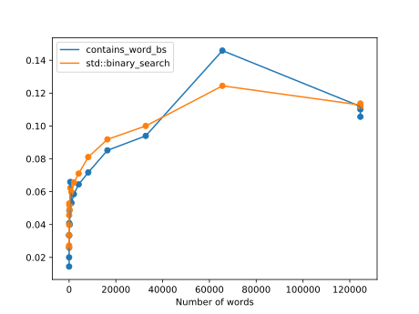

If you haven't read the Linear Search notes, read those first.
Linear Search might be fast for small inputs but if you the input (the number of things you're searching through) becomes twice as big, it's going to take about twice as long to search. If the input gets K times as big, it's going to take about K times as long to search.
We can do better! With Binary Search and a sorted list, if we double the size of the input, it'll take the same amount of extra time no matter how big the input is.
For the rest of this page, we'll use an example where we have a list of words and we want to know if some word is in that list. This might be useful for checking if a word is an English word, like when you're typing and you see the red squiggly lines under the word because it's mispellled, or if you implemented a game like Scrabble and you want to know if a word is valid or not.
Let's walk through an example, searching for the word "olive" in this sorted list:
| index | word |
|---|---|
| 0 | apple |
| 1 | banana |
| 2 | durian |
| 3 | lemon |
| 4 | lime |
| 5 | mango |
| 6 | orange |
| 7 | peach |
| 8 | pear |
| 9 | raspberry |
Since the list is sorted, you know that if the word you're looking for is in the list, it must be between the first word (at index 0) and the last word (at index 9). Binary Search is a process of elimination. We can look in the middle and see if that middle word comes before or after "olive"... and just keep repeating this until we either find "olive" or eliminate all words in the list.
Note: In C++ and many programming languages, it is idiomatic to represent a range of integers by including the lower bound and excluding the upper bound!
At each step, you check the middle word in the range. Since we start with [0, 10), we first look at index 5: "mango".
| lower bound | upper bound | middle index | middle word | what happens |
|---|---|---|---|---|
| 0 | 10 | (1 + 10) / 2 == 5 | mango | "olive" comes after "mango" so we update the lower bound to be just past "mango" |
| 6 | 10 | (6 + 10) / 2 == 8 | pear | "olive" comes before "pear" so we update the upper bound to be just before "pear" |
| 6 | 8 | (6 + 8) / 2 == 7 | peach | "olive" comes before "peach" so we update the upper bound |
| 6 | 7 | (6 + 7) / 2 == 6 | orange | "olive" comes before "orange" so we update the upper bound |
| 6 | 6 | (6 + 6) / 2 == 6 | orange | now our range is empty (lower bound == upper bound), so we know "olive" is not in the list |
bool _contains_word_bs(
const vector<string>& words, const string& word, int low, int high) {
// Base case: Could not find the word
if (low == high) {
return false;
}
const int middle = low + (high - low) / 2;
const string& mid_word = words[middle];
if (mid_word == word) {
// Base case: Found the word!
return true;
} else if (word < mid_word) {
high = middle;
} else { // if (word > mid_word)
low = middle + 1;
}
// Recursive case: We've narrowed down the search to the left or right half.
return _contains_word_bs(words, word, low, high);
}
bool contains_word_bs(const vector<string>& words, const string& word) {
return _contains_word_bs(words, word, 0, words.size());
}
std::binary_search, defined in the <algorithm> header is a more general version of binary search than contains_word_bs.
#include <algorithm>
#include <chrono>
#include <iostream>
#include <fstream>
#include <random>
#include <string>
#include <vector>
using std::cout;
using std::endl;
using std::ifstream;
using std::string;
using std::vector;
vector<string> read_lines(const string& filepath, const long max_lines=-1) {
ifstream f(filepath);
vector<string> lines;
for(string line; getline(f, line); ) {
lines.push_back(line);
if (max_lines > 0 && lines.size() >= max_lines) {
break;
}
}
return lines;
}
vector<string> get_random_words(const vector<string>& words, const int sample_size) {
std::default_random_engine dre;
std::uniform_int_distribution<int> uniform_dist(0, words.size() - 1);
vector<string> random_words;
for (int i = 0; i < sample_size; ++i) {
random_words.push_back(words[uniform_dist(dre)]);
}
return random_words;
}
bool _contains_word_bs(
const vector<string>& words, const string& word, int low, int high) {
// Base case: Could not find the word
if (low == high) {
return false;
}
// Bonus question: We can also calculate `middle = (low + high) / 2`.
// When is calculating `middle = low + (high - low) / 2` better?
const int middle = low + (high - low) / 2;
const string& mid_word = words[middle];
if (mid_word == word) {
// Base case: Found the word!
return true;
} else if (word < mid_word) {
high = middle;
} else { // if (word > mid_word)
low = middle + 1;
}
// Recursive case: We've narrowed down the search to the left or right half.
// Note that instead of recursing here, we could just as easily put the code
// in this function in a loop.
return _contains_word_bs(words, word, low, high);
}
bool contains_word_bs(const vector<string>& words, const string& word) {
return _contains_word_bs(words, word, 0, words.size());
}
// Returns the number of seconds to search for all `sample_words` in `words`.
double time_contains_word_bs(const vector<string>& words, const vector<string>& sample_words) {
auto start_time = std::chrono::steady_clock::now();
for (const string& w : sample_words) {
contains_word_bs(words, w);
}
auto end_time = std::chrono::steady_clock::now();
std::chrono::duration<double> elapsed_seconds = end_time - start_time;
return elapsed_seconds.count();
}
// Returns the number of seconds to search for all `sample_words` in `words`.
double time_std_find(const vector<string>& words, const vector<string>& sample_words) {
auto start_time = std::chrono::steady_clock::now();
for (const string& w : sample_words) {
std::binary_search(words.begin(), words.end(), w);
}
auto end_time = std::chrono::steady_clock::now();
std::chrono::duration<double> elapsed_seconds = end_time - start_time;
return elapsed_seconds.count();
}
int main(int argc, const char* argv[]) {
const int sample_size = 100000;
const char* words_filename = argc > 1 ? argv[1] : "words.txt";
// Output a CSV that can be graphed.
cout << "\"Number of words\",contains_word_bs,std::binary_search\n";
for (int n = 1; n < 1000000; n *= 2) {
vector<string> words = read_lines(words_filename, n);
std::sort(words.begin(), words.end());
vector<string> random_words = get_random_words(words, sample_size);
cout
<< words.size() << ","
<< time_contains_word_bs(words, random_words) << ","
<< time_std_find(words, random_words) << '\n';
}
return 0;
}$ clang++ -pedantic -Wall -lm -std=c++20 -o binary_search_timed binary_search_timed.cpp
$ ./binary_search_timed
"Number of words",contains_word_bs,std::binary_search 1,0.00855827,0.0181438 2,0.0335881,0.0260057 4,0.0144266,0.027207 8,0.0200405,0.0334882 16,0.0259783,0.0398651 32,0.0333111,0.0457143 64,0.0408519,0.0528456 128,0.0486311,0.0516905 256,0.0398941,0.0488686 512,0.065933,0.0623119 1024,0.0531733,0.0597795 2048,0.0584787,0.0655831 4096,0.0644368,0.0710156 8192,0.0717217,0.0810747 16384,0.0851656,0.0918523 32768,0.093964,0.100009 65536,0.145879,0.124425 124536,0.111868,0.112774 124536,0.110097,0.111882 124536,0.105616,0.113667

In practice, it looks like it's much faster than Linear Search, at least for larger inputs. It's possible that Binary Search is actually slower for small inputs but by eliminating half of the possible words at every iteration instead of only one word, even a slow Binary Search will beat a Linear Search on large inputs.
If Linear Search has to iterate for every word in the worse case scenario, how many times does Binary Search have to iterate? We know that in the base cases (when we narrow down the range to 1 word or 0 words), it only takes one iteration. We also know that for the general/recursive case, we cut the range of possible words in half. So basically, if there are N words, the most iterations we might do (the most recursive calls we might do) is the same as the number of times we can divide N by 2: log base 2 of N.